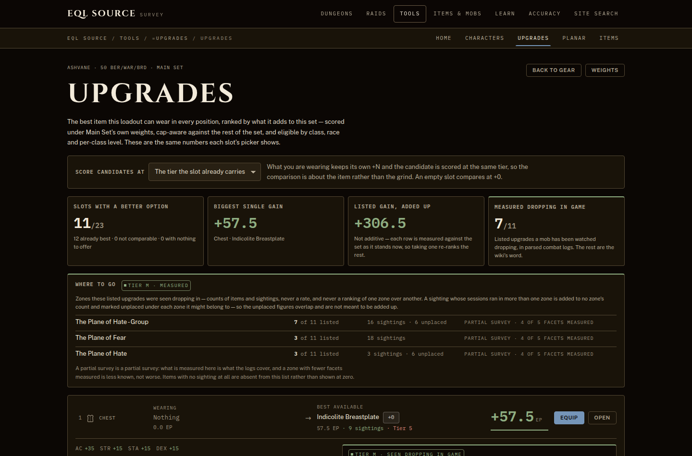
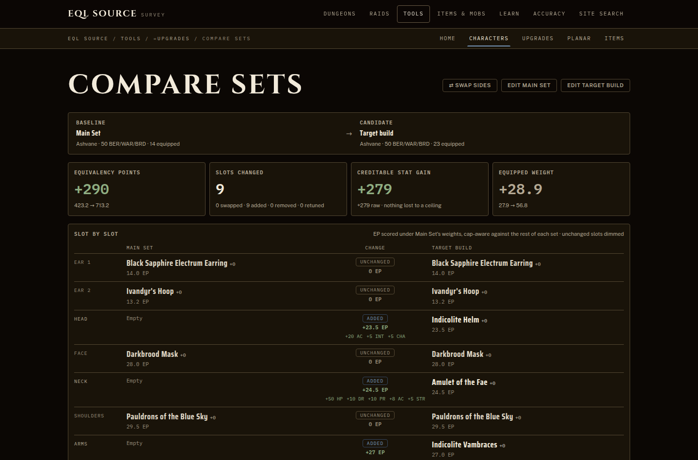
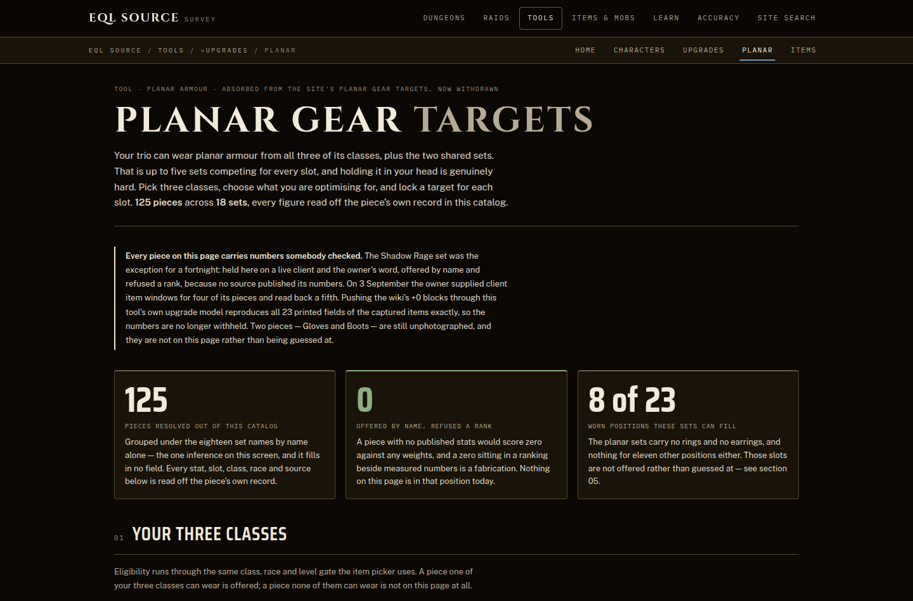
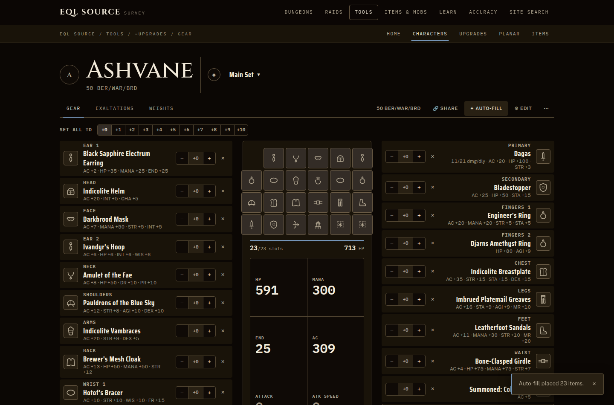

EQL Source / Tools / EQLS Upgrades
Gear planning · built and hosted elsewhere
EQLS Upgrades
Pick a trio and a race, fill the slots, and compare what each candidate does to the character rather than to the item beside it. It runs entirely in the browser: nothing is stored, no account is made, and a build travels as a link rather than as a saved record on someone else’s machine.
3,883 items1,776 with stats23 slots3 classes at once
Open the planner Hosted in its own repository · nothing to installWhat it looks like
The planner wears this site’s chrome, and these are its own screens — taken by its own test suite, against the catalogue it ships.
{kind=link}

{kind=link}

{kind=link}

{kind=link}

Taken 2026-09-03 from the planner’s own repository at commit c4f730af. The catalogue behind them still hashes to 22edb1547457, checked here 2026-09-03.
What it holds
Counted by the planner itself and read from its published snapshot, so this page cannot drift from the catalogue it describes.
Everything in it is content this game actually has. It was cut down from 11,457 rows: 7,584 are held back because nothing places them in EverQuest Legends, which is 66 per cent of what it started with, and Kunark, Velious and Luclin are the bulk of it. 3,873 of what survives are here on era alone; the other 10 have no era placing them and are here because something independent proves they exist.
Where the numbers come from
The planner grades its own rows and publishes the grades. This is that table, unedited.
- 2,109 structured wiki data for an item whose era places it inside this game T2
- 1,638 no sourced stat values at all — the row either never had any or withholds them
- 127 wiki numbers with no era placing them here, so the stat block may describe an item of the same name from a different game T5
- 9 read off a live client window and agreeing with it field for field M
42 per cent of the catalogue carries no source standing. That is the single most useful thing to know before trusting a comparison, and the planner says it about itself rather than leaving it to be discovered. A row with no attribution is not a wrong row — it is a row whose numbers nobody has traced to a source, and the difference matters most exactly when two candidates are close.
What it will not tell you
Item flags are unreliable and the planner says so in its own data: the wiki carries two authoring conventions, and a live client window disagreed with the catalogue on both items anyone has checked. Do not use a tradeability flag here to decide whether a guildmate can hand you something.
Weapon skill is wrong for at least some monk fist weapons. The wiki itself is internally inconsistent about them, and the planner reports the suspects rather than quietly correcting a source it cannot verify.
Damage bonus is absent. A client window shows one, no source carries it per item, and it appears to be derived from level and weapon type rather than stored on the item.
An era-less item is unconfirmed rather than assumed old. Where one ships anyway, it is because something independent proves it exists in this game.
Credit, and what the licence is not
Item data is derived from the EverQuest Legends Wiki
(eqlwiki.com), with attribution. eqlwiki.com publishes no content
licence — checked 2026-08-18: the wiki’s own
siteinfo rightsinfo is empty and its copyrights page is absent. The terms
of reuse are not stated by the source, so none are claimed here on its behalf.
EverQuest is a trademark of Daybreak Game Company LLC. Neither the planner nor this site is affiliated with Daybreak or Game Jawn.
Figures on this page are read from the planner’s own published snapshot, taken 2026-09-02. The file this page reads.